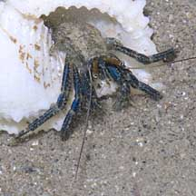
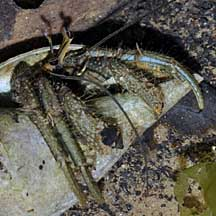
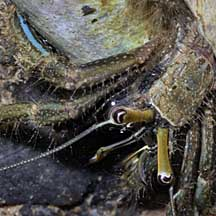
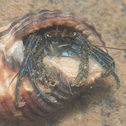

|
|
| hermit crabs text index | photo index |
| Phylum Arthropoda > Subphylum Crustacea > Class Malacostraca > Order Decapoda > Anomurans > hermit crabs > Clibanarius |
| Blue-striped
hermit crab Clibanarius longitarsus* Family Diogenidae updated Jan 2020 Where seen? This small hermit crab is seen near mangroves, on sandy shores and among seagrasses. Elsewhere, it is found around rivers and mangroves on mud or sand. Usually, only one is seen. It is not seen in such abundance as the Orange-striped hermit crab. |
|
 Tanah Merah, Apr 11 |
 |
 |
| Features: Body 1-2cm long, mostly
plain pale. Both pincers are more or less equal in size and held so
that the 'fingers' open horizontally in front of the animal. Pincers
sparsely hairy, no stripes, olive or brown with paler blue or bluish-green
pimples. Walking legs sparsely hairy, bluish-green to olive-tan, with
two stripes which may be olive or brown, areas between stripes whitish-tan.
Eye stalks olive green to brown without any distinctive stripes. Short
antennae and long antennae dull brown or olive. More on how to tell apart Clibanarius hermit crabs. |
|
 Berlayar Creek, Jan 09  |
*Species are difficult to positively identify without close examination.
On this website, they are grouped by external features for convenience of display.
| Blue-striped hermit crabs on Singapore shores |
On wildsingapore
flickr
|
| Other sightings on Singapore shores |
 |
| Acknowledgements With grateful thanks to liwaliw for identifying this hermit crab on wildsingapore flickr. Links
References
|